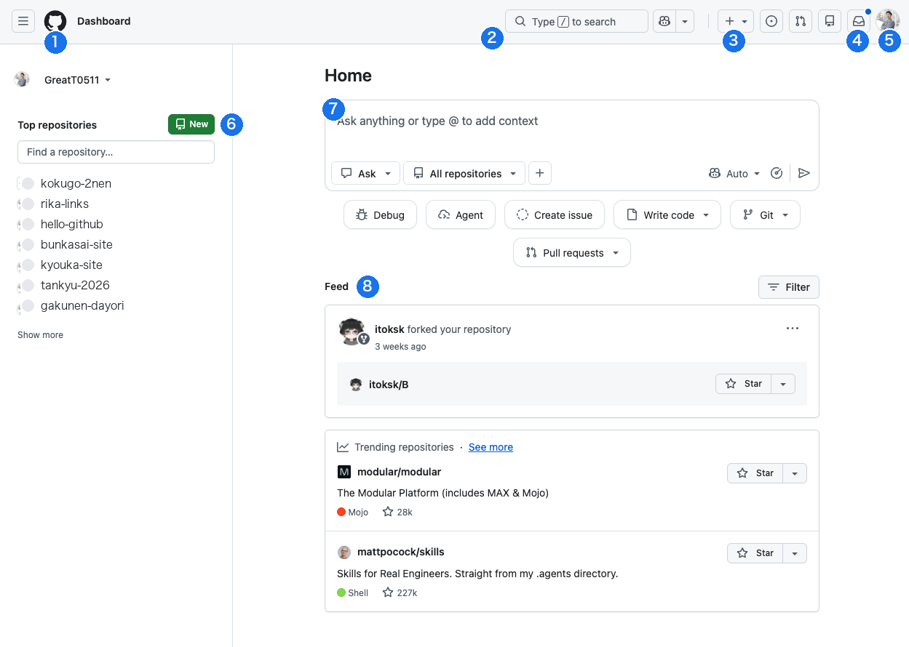
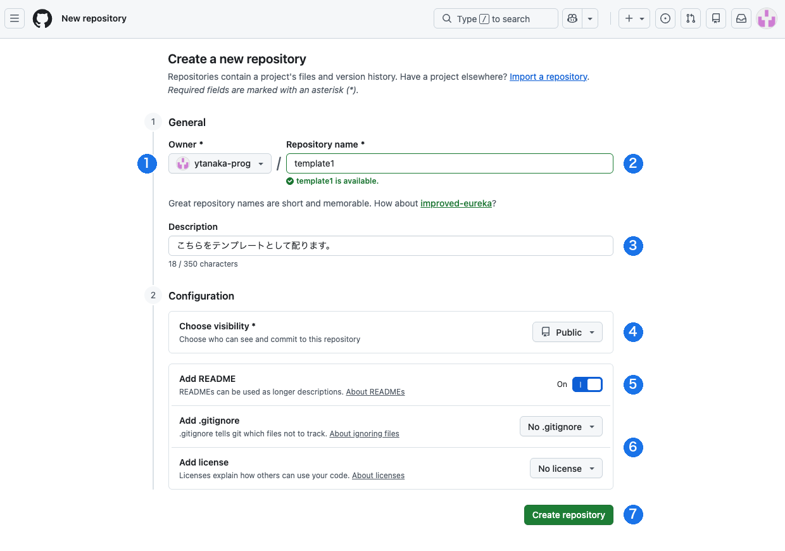
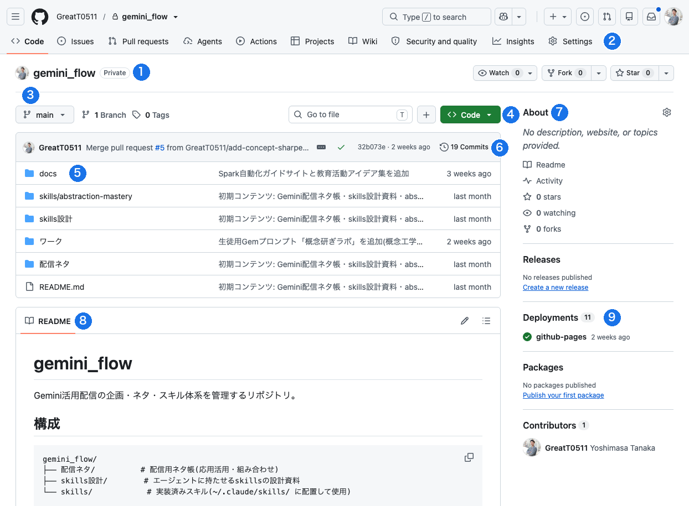
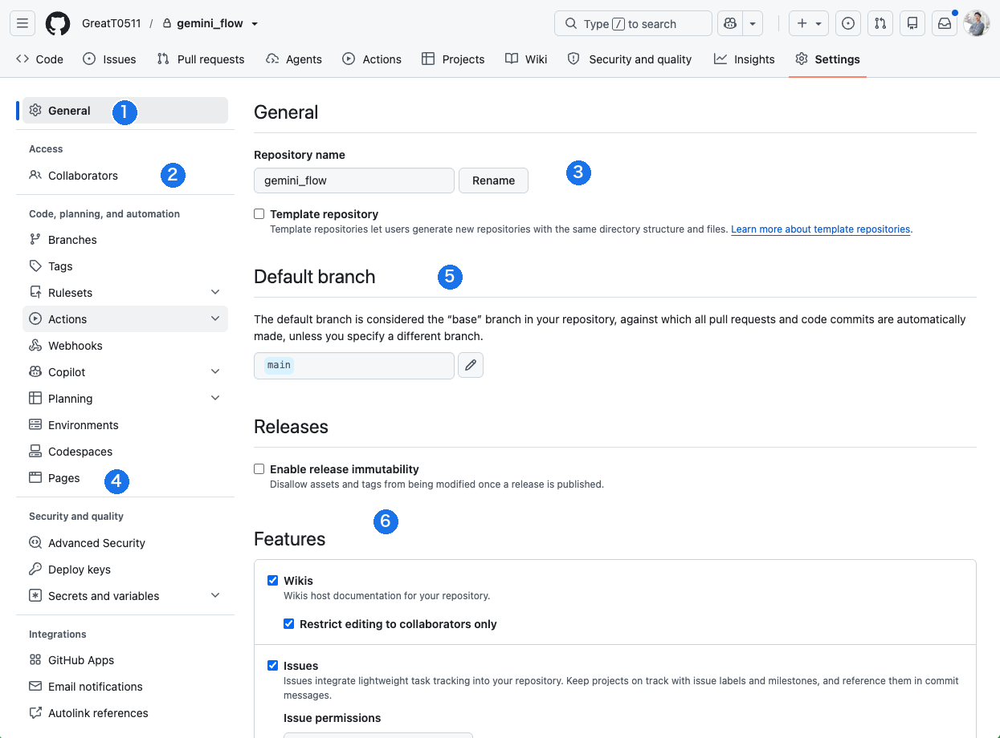

画面1：ログイン直後のホーム。左が自分のリポジトリ、右が作業エリア
- GitHubロゴ／Dashboard — どの画面にいても、ここを押せばこのホームに戻れます。迷ったらまずここ
- 検索バー — 自分のリポジトリやファイルを横断検索。キーボードの「/」キーでも開きます
- 「＋」ボタン — 新しく作るときの入口。New repository（新しいリポジトリ）はここです
- 通知（ベル） — 共同編集者への招待や、プルリクエスト（§6）の連絡がここに届きます。青い点＝未読
- 自分のアイコン — アカウント全体のメニュー。Settings（アカウント設定・§1の二段階認証はここから）やサインアウト
- Top repositories＋New — よく使うリポジトリへの近道。緑のNewからも新しいリポジトリを作れます
- Copilotの質問欄 — GitHubに組み込まれた生成ＡＩアシスタント。無料枠（チャット月50回）があり、§2-5のワークで少しだけ使います。自分のリポジトリについて質問できるのが特長です
- Feed — 自分のリポジトリやフォローした人の動きが流れる掲示板。見るだけの場所で、操作は不要です

画面2：「＋」→ New repository で開く作成画面。入力は上から順に
- Owner（所有者） — 誰の箱として作るか。ふつうは自分のアカウントのままでOK（組織に入っていると選択肢が増えます）
- Repository name（名前） — 半角英数とハイフンで。URLの一部になります。下に緑で「is available」と出れば使える名前です
- Description（説明） — 任意。書いておくとリポジトリのAbout欄に表示され、あとで自分が助かります
- Choose visibility（公開範囲） — 迷ったらPrivate（非公開）。Publicにするのは§4のWeb公開用リポジトリだけ、が今日のルールです
- Add README — 常にOnにします。箱の表紙（§2）がある状態で始められます
- .gitignore／license — プログラム開発用の設定です。どちらも「No」のままでOK。触りません
- Create repository — 作成ボタン。押した瞬間に箱ができて、画面3に移動します
check_circle
決めるのは実質①名前 ②公開範囲 ③README Onの3つ。それ以外は初期値のままで大丈夫です。「短く・覚えやすく・半角」の名前だけ、作る前に決めておきましょう。

画面3：リポジトリを開いた画面。ファイル一覧と履歴の入口が並ぶ
- リポジトリ名＋公開状態 — いまどの箱にいるか。Private＝非公開／Public＝全世界公開。作業前にここを一瞥する癖を
- タブ列 — 機能の切り替え。今日使うのは Code（ファイル一覧）と Settings（設定）、§6で Pull requests。他のタブは触らなくて大丈夫です
- ブランチ（main） — 版の「本流」の名前。この研修では常にmainのまま。変更しません
- 緑のCodeボタン／Add file — Add fileがファイルの追加（Create new file／Upload files）、緑のCodeの中にDownload ZIP（丸ごと持ち出し）があります
- ファイル一覧 — 行の左がファイル名・フォルダ名、真ん中がそのファイルを最後に変えたときのコミットメッセージ、右がその日時。一覧そのものが「変更理由の一覧」になっています
- コミット数（19 Commits） — 履歴（History）の入口。押すとこのリポジトリの全履歴が時系列で見られます（§3で使った画面）
- About — リポジトリの説明欄。右の歯車 → 「Use your GitHub Pages website」にチェックを入れると、§4で公開したページのURLをここに表示できます（自動では出ません。表示しておくと生徒がURLを探さずに済みます）
- README — リポジトリの「表紙」。開いた人が最初に読む説明書で、ファイル一覧の下に自動表示されます（§2で書いたもの）
- Deployments／github-pages — Pages公開の状態。緑のチェック＝公開が動いている印です（§4）

画面4：リポジトリのSettings。左が設定の目次、右が設定内容
- General — 基本設定。開いた直後はこのページが表示されています
- Collaborators — 共同編集者の招待（§3）。同僚を入れるのはここ。Add people → 相手のユーザー名で招待
- Repository name＋Rename — リポジトリ名の変更。URLも変わるので、共有後の変更は慎重に
- Pages — Webページ公開のスイッチ（§4）。Branchをmainにして Save するだけ
- Default branch — 本流ブランチの設定。mainのまま変えません
- Features — Wiki・Issuesなど付属機能のON/OFF。初期設定のままでOKです
warning
Settingsのいちばん下には「Danger Zone」があります。リポジトリの削除・公開範囲の変更など、取り返しに手間がかかる操作のコーナーです。赤い枠が見えたら、それ以上スクロールしない——今日はこれで十分です（万一削除しても90日以内なら復元できます。
Q&A参照）。
explore
迷子になったときの合言葉：「ロゴ → 箱 → Code」。①左上のロゴでホームへ → ②左のTop repositoriesから自分の箱へ → ③Codeタブでファイル一覧へ。この3手でどこからでも作業場所に戻れます。